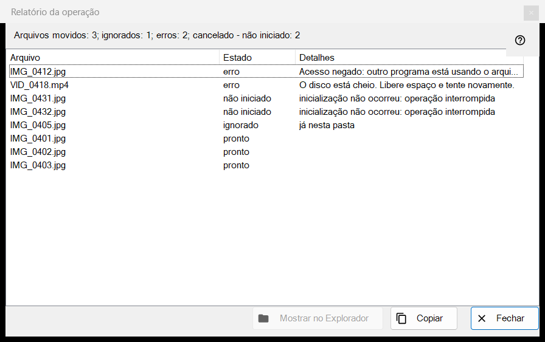
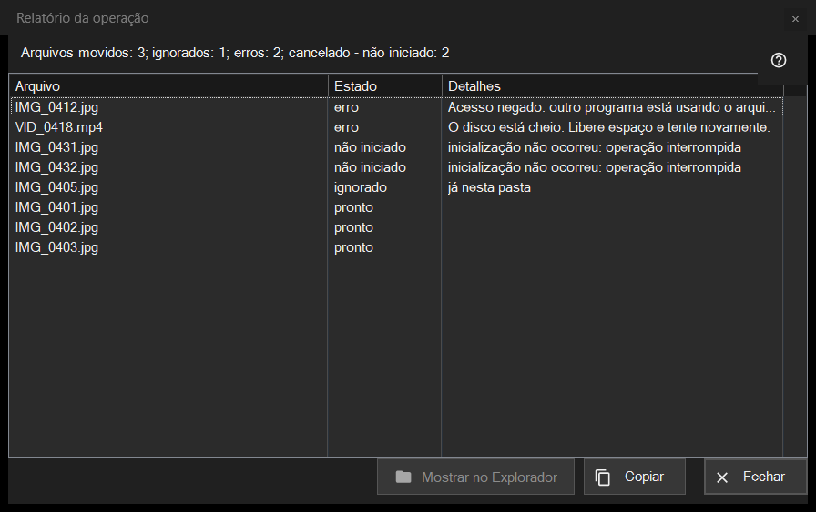

Relatório da operação
Finalidade
Lista o que aconteceu com cada arquivo da última operação em lote (mover, copiar, excluir ou desfazer) e por que algo foi ignorado ou falhou. Nunca se abre sozinho: clique na linha do relatório no rodapé do painel de miniaturas (F3) depois de uma execução. Se a execução não foi limpa, a linha termina com «clique para ver os detalhes».


Nesta ordem
- Execute uma operação sobre vários arquivos no painel de miniaturas.
- Leia a linha de resumo no rodapé do painel.
- Clique na linha para abrir esta janela.
- Olhe o topo da lista: as falhas vêm primeiro.
- Selecione linhas e use «Copiar» para pegar os caminhos delas ou «Mostrar no Explorador de Arquivos» para achar um arquivo.
Os elementos
A linha de resumo
A linha começa com o resultado: «Arquivos movidos: 5», «Arquivos copiados: 5», «Arquivos excluídos: 5», «Arquivos restaurados: 5» ou «Operações concluídas: 5». Outras partes, cada uma com a sua contagem, aparecem só quando a contagem não é zero: «ignorados», «erros», «operações sem desfazer», «excluídos permanentemente, não é possível restaurar» e, quando a execução para antes, «interrompido, sem conexão com a pasta - não iniciado» (três conexões que falham seguidas a param) ou «cancelado - não iniciado».
A lista
Colunas: Arquivo, Estado e Detalhes. As piores linhas vêm primeiro: com falha, depois não iniciadas, depois ignoradas, depois concluídas; dentro de um grupo os arquivos mantêm a ordem da execução. A dica de uma linha mostra o caminho completo. Os detalhes dão um motivo claro para uma falha, a pasta de destino para um arquivo concluído, «salvo como» e o novo nome quando o antigo estava ocupado, e «Excluído permanentemente - não é possível desfazer» para uma exclusão que pulou a Lixeira.
Estados e motivos de omissão
Estados: «pronto», «Erro», «ignorado», «não iniciado». Um arquivo ignorado diz por quê: «já nesta pasta», «o arquivo não está mais no disco», «os arquivos dentro do arquivo compactado não são modificados», «o mesmo nome já existe entre os arquivos selecionados», «o recurso é somente leitura», «este é o mesmo arquivo» ou «nome já em uso na pasta de destino». Um arquivo não iniciado diz «inicialização não ocorreu: operação interrompida».
Mostrar no Explorador de Arquivos, Copiar, Fechar
«Mostrar no Explorador de Arquivos» fica ativo quando há uma linha selecionada; abre uma janela de pasta com o primeiro arquivo selecionado em destaque, ou a pasta se o arquivo foi movido. «Copiar» (também Ctrl+C) coloca na área de transferência os caminhos completos das linhas selecionadas, um por linha, ou de todas as linhas quando nenhuma está selecionada: um jeito rápido de passar adiante a lista de arquivos com problema. «Fechar» encerra o relatório.